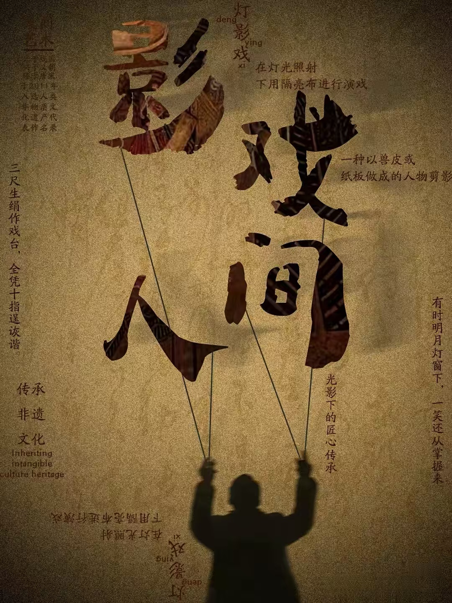
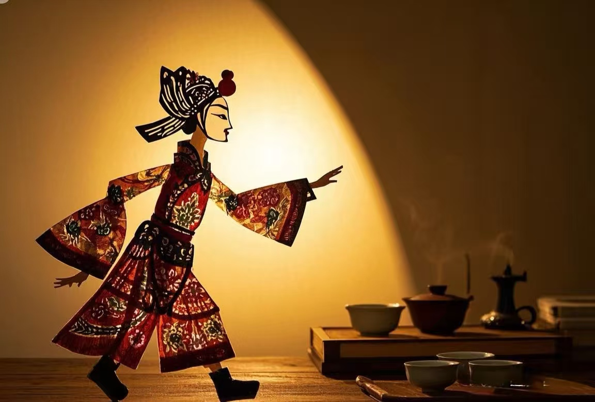
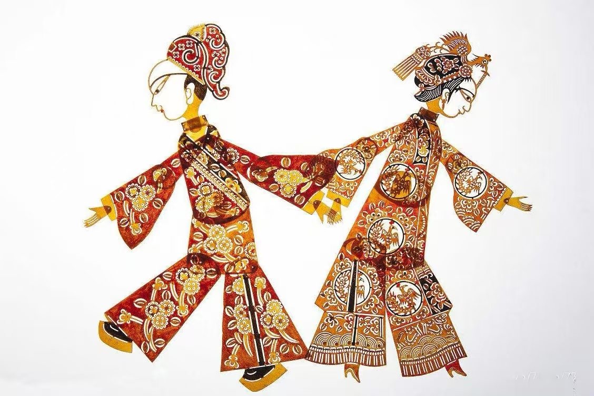
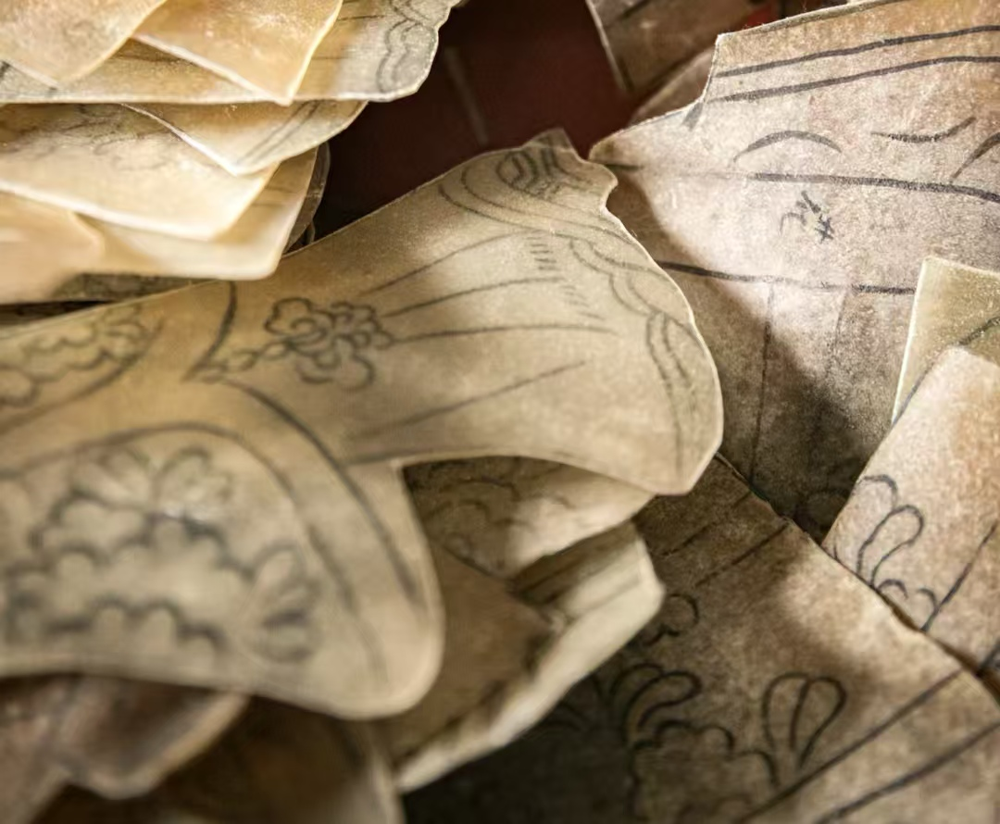
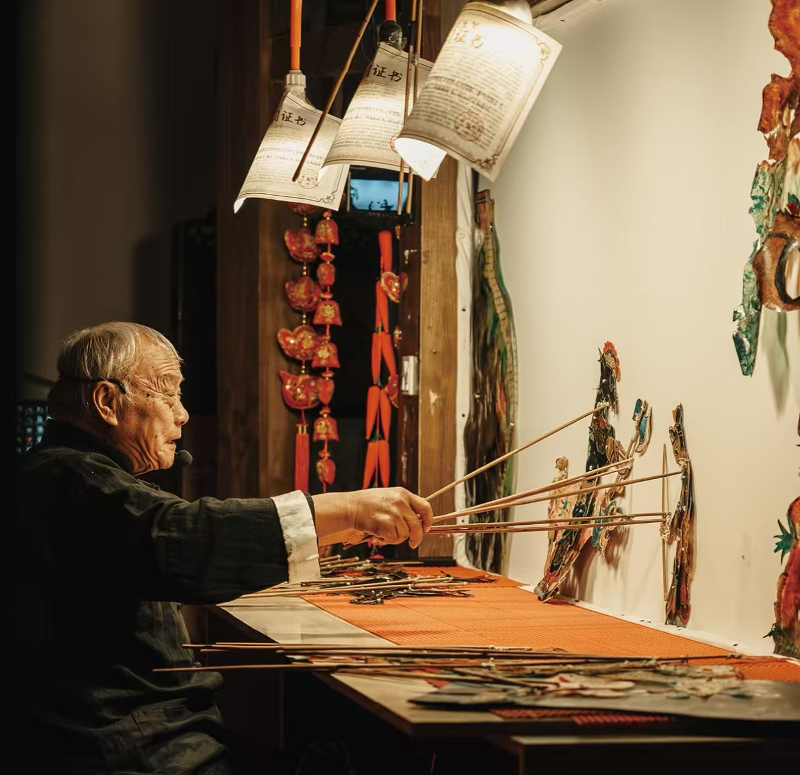

历史渊源
古代起源
皮影戏的文化基因可追溯至先秦时期的 “影戏” 雏形，当时人们通过燃烧油脂产生的光影，在布幔上模拟鸟兽形态以娱神或教学，这是 “光影叙事” 的原始形态。真正形成皮影戏的萌芽则在西汉，《汉书・外戚传》详细记载了汉武帝思念李夫人的典故：方士李少翁 “刻木为人像，衣以绮罗，昼日游于庭，夜设烛张幄，帝坐幄中望之，仿佛夫人形”，这是史料中最早将 “光影” 与 “人物造型” 结合的记载。
西汉后期，陕西关中地区的民间艺人受此启发，改用薄绢、羊皮裁剪人物轮廓，以烛火为光源，在简陋布幔上演绎《嫦娥奔月》《夸父追日》等神话故事，此时的皮影制作粗糙，仅能勾勒简单轮廓，表演多为单人 “唱念结合”，且以宫廷娱乐为主，但已确立 “以影代人、以光为幕” 的核心形式，为后世皮影戏的发展奠定了文化根基。

唐宋发展

唐代是皮影戏从宫廷走向民间的关键转型期。随着佛教东传，“俗讲”（佛教故事宣讲）盛行，艺人将皮影与俗讲结合，在寺庙佛堂搭建临时戏台，用皮影演绎《金刚经》《妙法莲华经》中的故事，既降低了传教门槛，也让皮影戏获得广泛传播。此时的影人制作材料从薄绢改为更耐用的牛皮、驴皮，雕刻技法初步形成，能刻出简单的衣纹褶皱，还会用朱砂、石绿等矿物颜料进行单色涂抹。到了宋代，市民文化繁荣催生了瓦舍勾栏这一固定演出场所，皮影戏成为 “百戏” 之一，艺人形成专业群体，分工细化为 “刻影”“掌影”“唱词” 等工种。
南宋孟元老《东京梦华录》记载，汴京的皮影戏棚 “不以风雨寒暑，诸棚看人，日日如是”，吴自牧《梦粱录》也提到临安城有 “影戏棚” 数十处，剧目拓展至《三国》《水浒》《包公案》等历史演义，表演融入 “唱、念、做” 完整体系，甚至出现了男女声对唱的唱腔，此时皮影戏已成为全民喜爱的民间艺术。
明清鼎盛
明清两代是皮影戏的黄金时代，地域流派全面绽放，技艺达到巅峰。明代因人口迁徙，皮影戏从陕西传播至全国，各地结合方言、音乐形成独特风格：陕西华县皮影以 “碗碗腔” 为唱腔，影人线条粗犷有力，单幅影人高约 20 厘米，擅长表现战争场面；河北唐山皮影（又称 “乐亭皮影”）影人仅 10-15 厘米，雕刻精细如发丝，表演时能做出 “眨眼”“摇头” 等细腻动作；四川阆中皮影色彩艳丽，多用红、黄、蓝对比色，武打场面中影人可 “挥刀”“翻跟头”，极具视觉冲击力，此外还有北京 “驴皮影”、湖北 “云梦皮影”、广东 “潮州皮影” 等数十个流派。
清代皮影戏更进入宫廷，康熙年间设立 “南府皮影班”，乾隆、光绪时期每逢春节、寿宴，宫廷都会上演《西游记》《封神演义》等大戏，影人用象牙、驴皮混合制作，镶嵌金丝，极为奢华。民间制作工艺也臻于成熟，雕刻分 “阴刻”（镂空线条）“阳刻”（保留线条），上色用矿物颜料，可保存数十年不褪色，商业性班社遍布城乡，仅河北唐山就有近百个班社，演出市场空前繁荣。

近现代变迁

清末至民国，战乱成为皮影戏发展的 “断层期”。从鸦片战争到抗日战争、解放战争，社会动荡导致大量皮影班社解散，艺人流离失所，许多珍贵的影人和剧目脚本毁于战火，河北唐山、陕西华县等流派仅剩少数老艺人坚守。建国后，政府启动传统艺术抢救工程，1955 年唐山成立全国首个国营皮影剧团，1958 年陕西组建 “华县皮影艺术团”，各地累计整理传统剧目 3000 多部，培养了一批年轻艺人，皮影戏曾走进农村、工厂、学校，成为宣传政策、传递文化的重要载体，比如改编《小二黑结婚》《白毛女》等现代剧目，深受群众喜爱。
但 20 世纪 80 年代后，电视、电影、动画片等现代媒介崛起，皮影戏因 “演出周期长、视觉效果单一” 失去竞争力，观众大量流失，到 90 年代末，全国传统皮影班社从建国初期的数千个锐减至不足 200 个，部分流派如湖北云梦皮影仅存 1-2 名传承人，虽有艺人尝试用 LED 灯替代烛火、用投影扩大画面，但因缺乏系统性扶持，整体仍处于 “保护大于发展” 的困境，技艺传承面临断代风险。
改革开放后，受现代传媒和娱乐方式的冲击，皮影戏的生存面临挑战。但在文化部门和民间艺人的努力下，湖湘皮影戏得到了有效的保护和传承。
当代传承
进入 21 世纪，皮影戏迎来 “活态传承” 的新机遇。
2006 年，中国皮影戏入选第一批国家级非物质文化遗产名录，此后陕西华县、河北唐山等地建立非遗保护中心，录制老艺人表演影像 500 余小时，整理雕刻技艺手册 20 余本，国家还设立 “非遗传承人补助”，支持年轻艺人拜师学艺。传承方式也不断创新：艺人紧扣时代主题，创作《环保小卫士》《抗疫故事》《航天梦》等新剧目，用皮影讲述现代故事；借助抖音、快手等短视频平台，“唐山皮影”“华县皮影” 等账号累计粉丝超千万，一段 “皮影版《西游记》三打白骨精” 视频播放量破亿，吸引大批年轻观众；文旅融合背景下，西安、唐山皮影主题公园、丽江古城等景区将皮影戏纳入常态化演出，游客可亲手体验雕刻影人；中央美术学院、陕西师范大学等高校开设 “皮影艺术” 选修课，甚至用 3D 建模技术复刻传统影人，制作数字皮影动画，让古老艺术融入元宇宙、虚拟演出等新场景。如今，皮影戏不仅走出 “濒危” 困境，还多次赴法国、日本、美国开展文化交流，成为中国传统文化 “走出去” 的重要名片，以传统为根、创新为翼，在当代文化场景中焕发新生。
